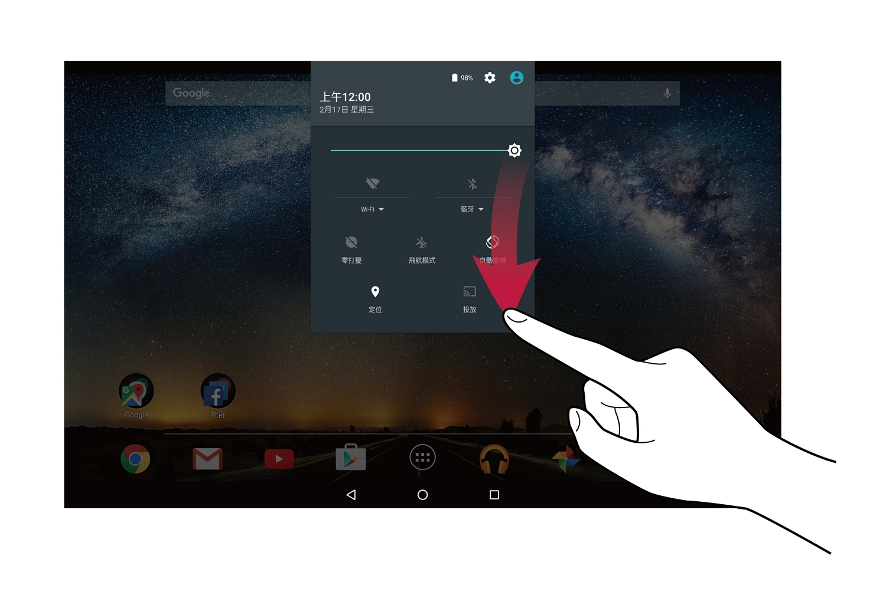
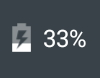
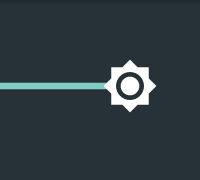
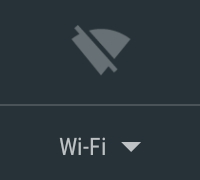
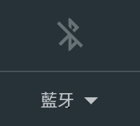
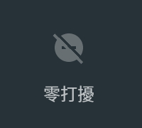
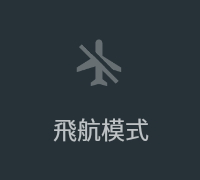
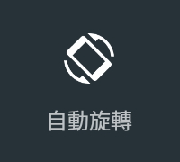
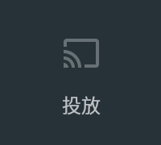

快速設定
將狀態列區塊向下拉時，將顯示快速設定。
| 可設定的內容 | |
|---|---|
| 顯示使用者資訊。 | |
|  | 顯示電池剩餘電力。觸碰後將開始電池設定畫面。 |
| 顯示設定畫面。 | |
|  | 可調整螢幕亮度。 |
|  | 顯示 Wi-Fi 設定畫面。 |
|  | 啟用/停用藍牙功能。 |
|  | 啟用/停用零打擾功能。 |
|  | 設為飛航模式。本裝置的無線通訊功能（Wi-Fi、藍牙功能）將進入停用狀態。 |
|  | 可設定是否要讓螢幕的方向依據平板電腦的傾斜度自動旋轉。 |
 |
讓應用程式更迅速準確地判斷您的位置。 |
|  | 將喜愛的影音娛樂內容和應用程式投放到大螢幕上。 |